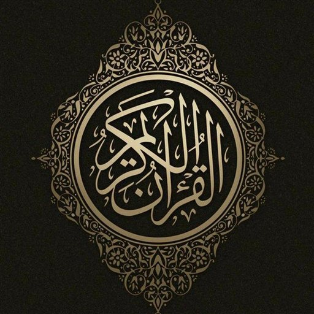

إذاعة مباشرة على مدار الساعة

مباشرhttps://archive.org/download/trtel-alquran-feed/radio.m3uhttps://archive.org/download/trtel-alquran-feed/all-by-mushaf.m3uالأولى دورات بقرّاء مختلفين، والثانية بترتيب المصحف.
VLC: انسخ الرابط ← افتح VLC ← قائمة «وسائط» ← «فتح بث شبكي» (Ctrl+N) ← الصق الرابط ← تشغيل. ثم فعّل زر التكرار ليعيد القائمة بلا نهاية.
VLC: انسخ الرابط ← افتح VLC ← «الشبكة» ← «تدفق الشبكة» (Network Stream) ← الصق الرابط ← «فتح تدفق الشبكة»، ثم فعّل التكرار.
VLC: انسخ الرابط ← افتح VLC ← «المزيد» ← «بث جديد» (New stream) ← الصق الرابط ← تشغيل، ثم فعّل التكرار من شاشة التشغيل.
https://archive.org/download/trtel-alquran-feed/podcast.xmlPocket Casts (pocketcasts.com أو التطبيق): البحث ← الصق الرابط في خانة البحث مباشرة ← اشترك.
Apple Podcasts (ماك): قائمة «ملف» ← «متابعة برنامج بالرابط» ← الصق الرابط.
Apple Podcasts: المكتبة ← «⋯» أو «تعديل» ← «متابعة برنامج بالرابط» (Follow a Show by URL) ← الصق الرابط.
Overcast: (+) ← «Add URL» ← الصق الرابط.
Podcast Addict / AntennaPod: زر الإضافة (+) ← «إضافة برابط RSS» ← الصق الرابط.
Pocket Casts: البحث ← الصق الرابط في خانة البحث مباشرة ← اشترك.
958 تلاوة بحجم يقارب 23 جيجا؛ لكبر الحجم لا يوجد ملف مضغوط واحد، والأسهل قائمة روابط تضعها في برنامج تحميل فينزّلها كلها مرة واحدة:
all-urls.txtتحميل القائمةأو حمّل كل قارئ وحده: افتح صفحته للاستماع وتحميل ملف واحد، أو حمّل مجلده كاملًا بصيغة ZIP.